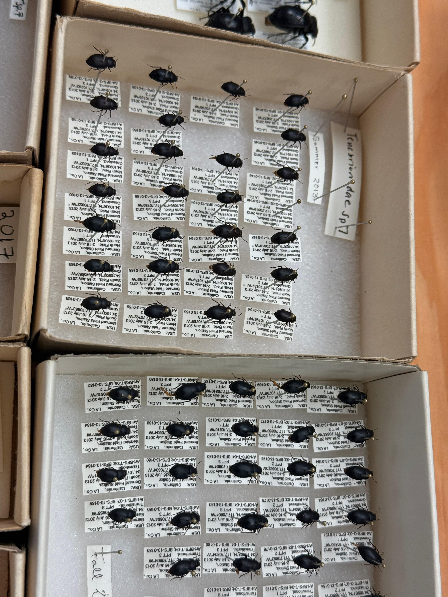

How did beetle assemblages change over a decade?
This collaborative research project investigated whether beetle communities at the Robert J. Bernard Field Station had changed between 2013–2014 and 2023–2024.
The study focused on beetles associated with California sage scrub and other habitat types within a fragmented Southern California landscape. Because remaining sage scrub fragments are exposed to disturbances such as urban development, habitat modification, altered fire regimes, drought, and invasive species, understanding how arthropod communities change through time can provide important information for conservation.
The research compared beetle collections made approximately ten years apart while accounting for season and habitat. The current analysis focused on three beetle families: Carabidae, Tenebrionidae, and Scarabaeidae.
Beetle species richness would decline and beetle assemblage structure would differ between decades.
- Study site
- Robert J. Bernard Field Station, Claremont, California
- Sampling period
- 2013–2014 and 2023–2024
- Sampling sites
- 32 sites
- Pitfall traps
- 3 traps per site per season
- Beetle families
- Carabidae · Tenebrionidae · Scarabaeidae
- Species collected
- 37 beetle species in the three focal families
Hands-on contribution to the research process.
My contribution extended beyond the scheduled course work. Over approximately four months, I participated in additional work hours supporting specimen processing, taxonomic organization, data management, and the preparation of the dataset used for subsequent community analysis.
Specimen identification
I learned to recognize and sort beetles by family and morphological characteristics, working with specimens collected from the field station and organizing them into their appropriate taxonomic groups.
Specimen processing & inventory
I helped process, organize, and inventory collected specimens. Species-level determinations were subsequently handled with specialist expertise, while our team prepared the specimens and records for incorporation into the research inventory.
Data organization
I contributed to organizing the specimen records and maintaining consistent information needed for the broader dataset and later ecological analysis.
From field collection to ecological analysis.
The project combined field sampling, specimen preservation, taxonomic organization, data management, and community ecology analyses.
Field sampling
Beetles were collected using pitfall traps distributed across 32 sites representing California sage scrub, transitional habitat, and non-native grassland. Traps were deployed seasonally during the two sampling periods.
Sorting & preservation
Collected arthropods were sorted into taxonomic groups, with beetles separated and prepared for identification and long-term specimen organization.
Family-level identification
I worked with the specimens to identify beetles by family using visible morphological characteristics. This provided an important first stage of taxonomic organization before species-level identification.
Species identification
Species-level identification was supported by specialist expertise, including genetic identification, allowing the research team to build a more complete inventory of the beetle assemblage.
Community analysis
The organized dataset was subsequently used for ecological analyses examining species richness and differences in assemblage structure between decades, seasons, and habitat types.
Learning conservation science through specimens.

Pinned and labelled Tenebrionidae specimens, Summer 2013.
Identifying beetle families
Working directly with specimens gave me practical experience recognizing beetle families from morphological characteristics and understanding how taxonomic organization supports ecological research.
From specimen to inventory
Specimens were sorted, pinned, organized, and prepared for identification and inventory. This process connected physical biological collections with the structured data required for later analysis.
Reliable research records
Consistent specimen organization and record keeping were essential for maintaining a usable dataset across collections separated by a decade.
Working across expertise
The project brought together undergraduate researchers, taxonomic and genetic expertise, and ecological analysis. My role formed part of the specimen-processing and data-preparation stage that supported the broader research.
Richness remained stable, while assemblage structure changed.
The final analysis found that beetle species richness did not differ significantly between decades, while the composition and abundance structure of the assemblage changed over time.
Beetle richness did not differ between the 2013–2014 and 2023–2024 sampling periods.
However, beetle assemblage structure differed between decades (F = 5.13, p = 0.001), as well as among seasons (F = 16.17, p = 0.001) and habitats (F = 2.56, p = 0.001).
The differences between decades were driven primarily by changes in the abundance of common species, while the presence and absence of rarer species also contributed to differences in assemblage structure.
Seasonal variation represented the strongest effect, making the differences between decades comparatively more difficult to visualize.
What do these changes mean for conservation?
The findings suggest that beetle assemblages within California sage scrub fragments may be more resilient than expected, even after a decade that included major environmental disturbances.
Stable richness
The absence of a detectable decline in species richness suggests that the studied fragments retained a substantial component of their beetle diversity across the decade.
Different assemblages
Stable richness did not mean a static community. Changes in abundance and the occurrence of rare species altered the structure of the assemblage.
Habitat matters
Significant differences among habitats suggest that losing particular habitat types could still affect beetle diversity and community structure.
The research product.
The work contributed to a collaborative research project examining a decade of ecological change at the Robert J. Bernard Field Station. The poster below presents the broader research question, methods, results, and conservation interpretation.

Research presentation
Documentation of my participation in the collaborative research project examining beetle assemblages at the Robert J. Bernard Field Station.

10 Year Assessment of Changes in Beetle Assemblages
Poster documenting the collaborative study, including its hypothesis, sampling design, species inventory, statistical analyses, results, and conservation implications. Click to enlarge.
What I learned from the project.
This project gave me experience with a side of environmental research that is difficult to learn from coursework alone: working directly with biological specimens and understanding how those specimens become research data.
Over approximately four months, including additional hours beyond the scheduled work, I developed practical experience sorting beetles, recognizing families from visible characteristics, preparing specimens, and organizing records for a larger ecological inventory.
I also learned how collaborative research depends on different types of expertise. Our work with the specimens supported later species identification, while the organized inventory provided the foundation for subsequent community analyses.
Most importantly, the project helped me understand how field observations, specimen collections, taxonomic information, data management, and statistical analysis connect within a real research workflow.
Specimen Processing & Research Support
Family-level identification · Specimen organization · Inventory preparation · Data management · Quality control · Collaborative field research
Conservation research is collaborative by nature.
This project strengthened my understanding of biodiversity research from the specimen level to the community level, while giving me practical experience contributing to a long-term ecological dataset.